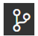
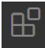
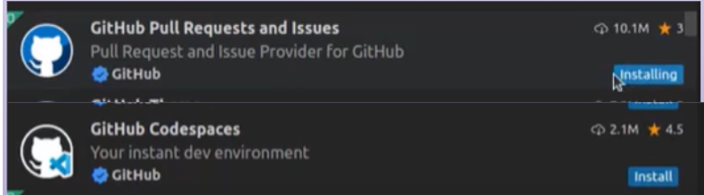
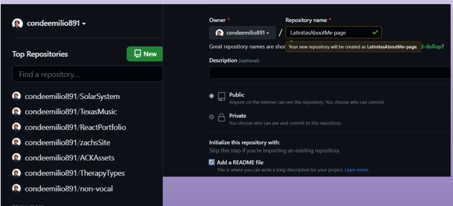
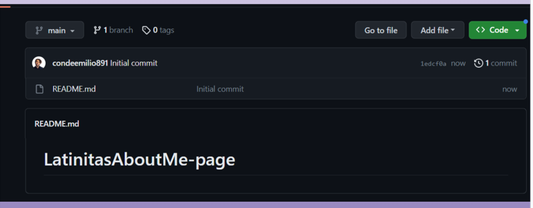

Instructions for Class 1
- 1. Make a folder for your projects. Right click on your desktop, go to new and click folder
- You can use F2 to rename the folder
- 2. Next install visual studio code by going to code.visualstudiocode.com
- If you have a chromebook let me know I will send you a resource
- 3. When you open visual studio code there will be a symbol to the left
- a. Click on that symbol and there should be an install git for windows go ahead and do that.
- b. Next click connect to GitHub.
- c. https://www.youtube.com/watch?time_continue=1&v=i_23KUAEtUM&embeds_euri=https%3A%2F%2Fdocs.google.com%2F&embeds_origin=https%3A%2F%2Fdocs.google.com&feature=emb_logo
- 4. Next Click on the extensions tab  install the following
- Search for the following and click install
- 
- 5. Next Go to GitHub and make a new user
- 6. Once a new user is made, make a new repository by clicking the green new button to the left
- 
- 7. You should see this page
- 
- 8. install github CLI
- a. For windows: Click here
- b.For mac I will Guide Click here this in
your console: brew install gh
- 9. Finally, Once you get through these steps wireframe your website pages: About me, Fan page and Page of your choice
- Excalidraw Click here for Excalidraw
- Scetch.io if you want more freedom Click here for scetch io